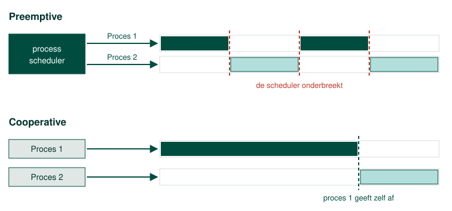

Procesbeheer
Wanneer we te maken hebben met een multiple tasks besturingssysteem moet er een mechanisme zijn die kan schakelen tussen de verschillende processen. De gebruiker moet immers op zijn minst de ‘indruk’ krijgen dat er meerdere taken tegelijkertijd worden uitgevoerd.
In een computer met 1 processor die 1 kern heeft kan er eigenlijk op een gegeven moment X slechts aan 1 proces gewerkt worden.
Een process scheduler lost dit op door vliegensvlug tussen de verschillende processen te context switchen. Ieder proces dat uitgevoerd wordt krijgt slechts een heel kleine slice van de resources van de processor.

Om te kunnen context switchen moet het mogelijk zijn om een proces even in een wachtrij te plaatsen. In bovenstaand schema zie je duidelijk hoe dit in zijn werk gaat. Bij het starten van een proces komt het in een ready queue terecht. Daar wacht het proces tot het door de process scheduler gekozen wordt om uitgevoerd te worden.
Nadat het een CPU slice (een stukje tijd van de processor) heeft gekregen (running), keert het proces terug naar de ready queue.
Het kan ook zijn dat een proces een lange tijd de processor niet nodig heeft. Dit kan bijvoorbeeld zijn wanneer het proces wacht om een I/O operatie (bijvoorbeeld een schrijf opdracht op de harde schijf) uit te voeren of wacht totdat een bepaalde I/O operatie compleet is.
Het zou dus geen zin hebben om constant dit proces opnieuw te laten uitvoeren als het toch niets te doen heeft. Om die reden kunnen processen ook in de blocked status terechtkomen. Merk op dat een proces niet rechtstreeks uit de blocked status naar de running status kan gaan. Een proces moet altijd gekozen worden door de process scheduler.
Cooperative multitasking
Bij cooperative multitasking wordt het process schedulen uitgevoerd door de processen zelf. Processen geven aan wanneer ze de processor niet meer nodig hebben en hevelen dan de controle aan een ander process over.

Dit systeem kan je vergelijken met een estafetteloop. Het spreekt voor zich dat cooperative multitasking enkel werkt als de processen hiermee goed omspringen.
Het kan namelijk zijn dat een proces de controle niet meer wil afgeven. Dit fenomeen noemen we starvation. Andere procoessen blijven op hun honger zitten en wachten hopeloos op processor tijd. Dit kan uiteindelijk ook een crash van het besturingssysteem met zich teweeg brengen.
Preemptive multitasking
In de figuur kan je duidelijk het onderscheid zien tussen preemptive en cooperative multi tasking. Bij preemptive multitasking is het de process scheduler van het besturinggsysteem die beslist wanneer een proces toegang krijgt tot de processor en ook en hoeveel resources het van de processor mag gebruiken.

Om dit te bepalen zijn er een aantal algoritmes uitgedokterd die je in onderstaande paragrafen kan nalezen. Bij preemptive multitasking worden, zoals je kan zien, processen abrupt onderbroken zonder dat ze daar zelf iets aan kunnen doen.
We moeten benadrukken dat er niet één bepaald process scheduling algoritme is die superieur is ten opzichte van de andere, het hangt er telkens vanaf waarvoor het besturingssysteem moet worden ingezet.
First come first served (FCFS)
Bij first come, first served krijgen de processen aandacht van de processor naargelang de volgorde ze in de ready queue van de process scheduler zijn gekomen.
Ieder proces krijgt aandacht van de processor tot de taak die het moet vervullen volledig volbracht is. Het spreekt voor zich dat dit een zeer eenvoudig algoritme is. Men spreekt ook wel van First In First Out.
Processen kunnen geen prioriteit claimen waardoor ze niet kunnen voorkruipen in de queue. Dit betekent eigenlijk ook dat er kan starvation optreden als de taak van een proces nooit definitief kan volbracht worden. We denken hierbij aan het uitrekenen van de cijfers na de komma van PI of het grootste priemgetal berekenen.
Shortest job first (SJF)
Met dit algoritme probeert men het probleem van First Come First Served op te lossen. Processen die een kleine uitvoeringstijd hebben krijgen voorrang op andere processen.
Sterker nog, wanneer een proces met een kleinere uitvoeringstijd in de queue komt die een kortere uitvoeringstijd heeft dan het huidig proces, dan wordt deze laatste onderbroken en terug in de wachtrij gezet. Dit heeft als voordeel dat er geen starvation meer voorkomt voor kleine jobs maar wel voor grote.
Onderstel bijvoorbeeld dat er telkens nieuwe kleine jobs bijkomen, dan krijgt de job met de langste uitvoertijd nooit de kans om uit te voeren.
Prioritiy based scheduling (PBS)
Ook deze naam laat niet veel aan de verbeelding over. In de queue krijgt ieder proces een bepaalde prioriteit toegekend. Processen met een lage prioriteit worden onderbroken ten voordele van processen met een grote prioriteit. Ook hier is starvation van processen met lage prioriteit mogelijk wanneer er telkens processen bijkomen met een hoge prioriteit.
Round robin scheduling (RRS)
Eigenlijk komt dit heel goed overeen met Time Division Multiplexing of TDM. Ieder proces krijgt een vast timeframe toegekend en wordt dus gegarandeerd uitgevoerd. Alle processen krijgen evenveel resources toegekend waardoor er zeer veel onderbrekingen plaatsvinden. Dit zorgt ervoor dat er zeer veel overhead is. Processen moeten immers gepauzeerd en terug gestart worden. Round Robin heeft geen last van starvation maar is wel iets trager.
Preemptive Multilevel Feedback Queue (PMFQ)
Zoals we al in het begin hadden aangehaald is er geen process scheduling algoritme dat superieur is aan een ander. Elk hebben ze voordelen en nadelen.
Windows gebruikt een combinatie van alle bovenstaande scheduling technieken die men onder de noemer multilevel feedback queue classificeert. Beschrijven hoe dit algoritme juist werkt zou ons veel te ver buiten het bereik van deze cursus leiden maar de aandachtige lezer zal na het lezen van bovenstaande paragrafen misschien zichzelf herinneren dat we in de Windows Task Manager de prioriteit van een proces zelf kunnen bepalen.
Prioriteit en realtime
Sommige processen moeten niet zozeer snel zijn als wel op tijd. Het aansturen van een motor, lassen, verven of een CNC-machine is tijdskritisch: de berekening moet binnen een vaste tijd klaar zijn, want een stuurcommando dat te laat komt is even fout als een stuurcommando dat helemaal niet komt. Een berekening op de achtergrond mag gerust een halve seconde wachten. Een regelkring die om de milliseconde een nieuwe waarde naar de motor stuurt, mag dat niet.
Daarom kan je een proces een hogere prioriteit geven, en die prioriteit is precies waar de process scheduler op kijkt. In de Windows Task Manager loopt ze van Low tot Realtime, en Realtime is de hoogste klasse die er is: een proces in die klasse krijgt de processor vóór alles wat eronder staat. Een echte garantie krijg je daarmee niet, want daarvoor bestaat er een real time operating system, dat kan waarborgen dat een taak binnen een zekere tijd afgehandeld is. Wat de prioriteitsklasse wel doet, is de kans zo klein mogelijk maken dat het proces moet wachten.
Dat is ook meteen de reden waarom je dat niet zomaar doet. Een realtime proces dat de processor vaker opeist dan het nodig heeft, of dat door een fout in een lus blijft draaien, duwt alles wat eronder staat naar achteren: de muis reageert niet meer, het scherm ververst niet meer, en de invoer waarmee je de machine zou stoppen komt niet meer aan. Dat is de starvation van hierboven, alleen kan je er nu niet meer omheen, want er is per definitie geen proces met een hogere prioriteit dat nog kan ingrijpen.
Een proces realtime laten uitvoeren is dus geen manier om een programma sneller te maken. Het is een keuze die je maakt voor een taak die werkelijk tijdskritisch is, en pas nadat je weet dat die taak de processor ook weer loslaat.